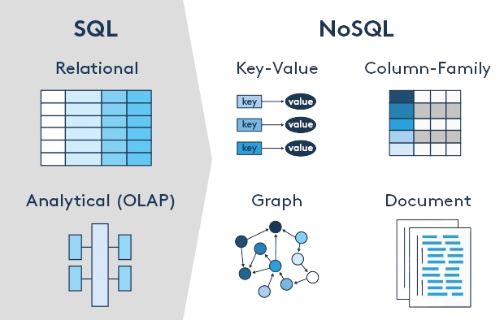

Bases de datos SQL: Almacenan los datos en tablas con filas y columnas. Cada tabla
tiene una clave primaria que identifica de manera única cada fila. Las relaciones entre las tablas
se establecen mediante claves externas.
* Estructura Tabular: Los datos se organizan en tablas, lo que facilita la consulta y la manipulación
de datos mediante SQL (Structured Query Language).
* Integridad de Datos: Las bases de datos relacionales aseguran la integridad de los datos mediante restricciones y reglas.
* Transacciones ACID: Garantizan que las transacciones sean atómicas, consistentes, aisladas y duraderas.
Bases de datos NoSQL: Las bases de datos no relacionales no siguen el esquema tabular tradicional.
En su lugar, utilizan diferentes modelos de datos, como documentos, grafos, columnas y pares clave-valor.
* Flexibilidad: Permiten almacenar datos no estructurados y semiestructurados,
lo que las hace ideales para aplicaciones con requisitos de datos cambiantes.
* Escalabilidad Horizontal: Pueden manejar grandes volúmenes de datos
distribuyendo la carga a través de múltiples servidores.
